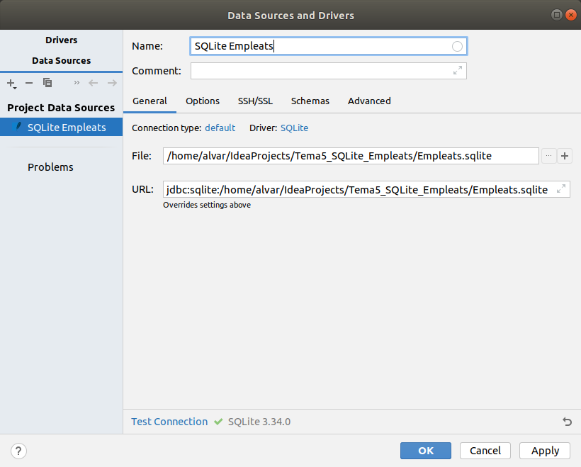

5 - Connexió a Hibernate
Des d'IntelliJ Idea no cal cap tipus d'instal·lació. Això sí, haurem d'utilitzar la versió ULTIMATE per a poder fer projectes que connecten a Hibernate.
Concretament seran projectes de tipus Jakarta EE, que és l'evolució de Java Enterprise, i com dèiem només estan disponibles en la versió Ultimate.
Durant aquest tema, cada connexió a una Base de Dades la farem en un projecte diferent, al contrari que en temes anteriors, on ho vam col·locar tot en el mateix projecte.
Aquestos projectes seran a més de tipus Maven, que es caracteritzen per no haver d'incorporar les dependències (Drivers) a mà, sinó que es reflecteixen automàticament en un fixter pom.xml, i ell s'encarrega de baixar tots els drivers necessaris. Ho farem així perquè, a diferència del que hem fet fins ara que hi havia pocs drivers a incorporar, per a Hibernate seran molts .jar, per tant és molt més còmode un projecte Maven, que ell s'encarregarà de baixartots els drivers necessaris
Els passos a seguir en cada projecte seran sempre els mateixos:
- Crear un projecte de tipus Jakarta EE (en versions anterior, Java Enterprise), amb la implementació de JPA per Hibernate
- Crear la connexió a la Base de Dades
- Afegir la configuració de persistència d'Hibernate, per a generar el fitxer hiernate.cfg.xml
- Mapejar les taules a classes
- Incorporar el Driver del SGBD a utilitzar (PostgreSQL en l'exemple)
- Acabar de configurar el fitxer hibernate.cfg.xml
El següent vídeo explica tot el procés de creació del projecte.
Nota
En versions anteriors, en el fitxer hibernate.cfg.xml no es guardava usuari ni contrasenya, i després li feia falta el dialecte de PostgreSQL. Concretament s'havien d'afegir les següents línies:
<property name="connection.username">geo_ad</property>
<property name="connection.password">geo_ad</property>
<property name="hibernate.dialect">org.hibernate.dialect.PostgreSQL93Dialect</property>
I observeu que en aquest exemple hem optat per incorporar el Driver directament, ja que el teníem des del tema passat. Podríem haver optat també per incorporar-lo a l'estil Maven, que seria senzillament incorporar en el fitxer pom.xml en l'apartat de <dependencies> la següent. Atenció: si ja heu incorporat el Driver de PostgreSQL al projecte, no cal que fey el que va a continuació
<dependency>
<groupId>org.postgresql</groupId>
<artifactId>postgresql</artifactId>
<version>42.2.24</version>
</dependency>I aquestes són les dades de connexió a la Base de Dades geo_ad de PostgreSQL:

Si la connexió fóra a MySQL la BD factura, recordem que les dades de connexió serien:

I fins i tot podem mapejar les taules d'una Base de Dades SQLite, amb una connexió com aquesta:

Llicenciat sota la Llicència Creative Commons Reconeixement NoComercial CompartirIgual 2.5